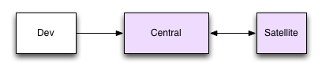
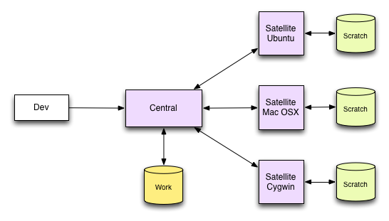

Continuous Integration is an established best practice. The 'ci' system makes it easy - trivial in fact - to setup your own continuous integration system, which can manage multiple projects, and multiple simultaneous build platforms.
Ci is a command-line system operated by a single user command, with practically no interface, and minimal system requirements.
The ci system has three nodes: central, satellite and dev. These nodes may reside on one machine, or may be distributed across many. Here is the simplest representation of this.

First there is the central node. This is a server that runs on a single machine and coordinates the ci system. Central receives notification of code changes and maintains a list of builds that need to be performed. All nodes communicate with central.
The satellite node performs build and test duties, as directed by central. When a satellite asks central for work, it provides a detailed profile of its platform and environment, such as OS and compiler version. Central will match this profile against any build requests, and will either respond with a project profile or will decline. The satellite will then perform the work and post back the results to central.
That leaves the dev client, which is the originator of build requests. Once initialized the developer does not interact with ci. A commit hook will be installed, and this will trigger a build for every commit made by sending the project profile to central. This process adds a fraction of a second delay to every commit, but otherwise you might never know it is there.
You only need to run one command (ci init) per project, ever. The rest is completely automated.
If the project does not use an SCM system, the features are more limited, for example there will be no commit hook requiring that "ci build" is be run manually. This means that with one command, you will be able to initiate the build and test process among all the platforms, but it cannot be fully automated.
The whole ci system is highly configurable, and easily extended to broaden the support for diverse needs. There is a built-in tolerance for machine unavailability, which allows it to accomodate modern development environments that include laptops, virtual machines and cloud computing.
Describing a sample setup will help clarify the roles and responsibilities of the nodes, as well as illustrate a typical setup. The simplest setup involves running central, satellite and dev nodes all on the same machine, but that is not a very interesting example. Here is a typical setup.

Suppose you have a project which you wish to build and test on three platforms. You would need three satellite nodes, one central node, and a dev node. Ci is installed on all nodes. It could be that the central and dev nodes are on one or two of those platforms, but that is not important.
It is convenient, but not necessary that the central node is installed on a continuously available system. After all, it is corrdinating the work.
Here is how you would go about setting up such a system:
First we setup and run central on machine 'dev1':
$ cd /local/central
$ ci init --central --admin /local/central --port 6543
$ ci central
Next set up and run the first of the three satellites:
$ cd /local/satellite
$ ci init --satellite --admin /local/satellite --scratch /local/satellite
$ ci config satellite.label Ubuntu_12.04
$ ci config central.server dev1:6543
$ ci satellite
The other satellites are set up in a similar fashion, but with unique 'satellite.label' values. If two satellites share the same label, they also share the workload, so they need to be be identical.
Finally the dev node. In this example, the dev node is a clone of the Taskwarrior project:
$ git clone git://tasktools.org:task.git task.git
$ cd task.git
$ ci init --host dev1:6543
Now when a commit is made on the laptop, the commit hook will trigger and notify central of the need for a build. Each of the running satellites occasionally asks for work from central, and will perform the build. Once completed, logs are sent back to central, which stores them in a structured file system.
If any node is not available, the sender will spool the message until the recipient is available again, and then resume.